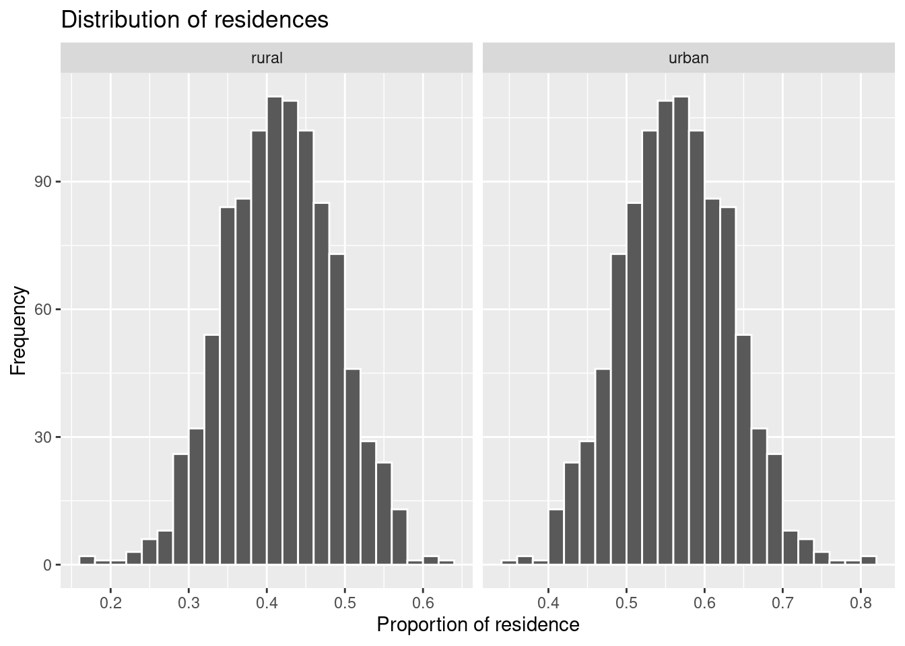

6 Sampling and variability
- Conduct random sampling using a computer
- Explain variability in random sampling
- Calculate sampling distributions
- Calculate the standard error
With this chapter we start our journey into inferential statistics. Inferential statistics or simply inference wants to go beyond analysing single data sets. It wants to know whether what we have observed in a single data set can be generalized to a larger context. Often, this context is called population. And such generalization techniques are nothing else than estimation of population parameters. For example, if you want to know the mean income of a large group of people, you either can ask every person (if you have time and money to do so) or you ask just a cleverly chosen group, a sample, and try to estimate from their mean income, the mean income of the whole group.
Another setting, where you will want to use inference, is when doing experiments, e.g. in the lab. Imagine you want to study the influence of increased temperature on the growth of a plant species. Then you would design an experiment where some plants of this species are grown at ambient temperature (control group) and some at increased temperature (treatment group). You measure their growth and want to know whether the difference observed is due to chance or whether this is a real difference, an effect of the treatment. And if this is a real difference, how large is it and how precisely can we estimate this effect. All these questions can be answered using inference.
We will do inference based on data science and a computer. Nowadays, computational power is usually no longer a problem and cool statistical inference can be done based on computer simulations and so called resampling techniques.
In this chapter you will learn how to use a computer experiment to draw samples from a simulated data set. You will see that every random sample is different. This experience should elucidate the concept of randomness or chance and variability.
6.1 Random sampling of data
We will use the following libraries. The library infer is a dedicated package for tidy inference.
We will simulate our own data set, our own population and invent the getsmarter university with 12000 students. The code below draws random numbers and simulates the following variables:
-
student_id: 1 to 12000 -
gender: male or female -
travel_time: time students travel to the university -
residence: type of place of residents, either town = urban or countryside = rural -
transport: how students travel/come to the university -
time_lib: time students spend in the university library
We organise all these variables in a tibble that we call getsmarter_pop.
Because we draw random numbers using R, every time we rerun the code, new numbers will be generated. To have a reproducible population, we use the function set.seed(). It accepts as a parameter an integer. Which integer we use does not really matter as long as we use the same every time we rerun the code. By setting the seed, we set the random number generate in R to a certain reproducible state. The numbers are still random, but reproducible 😄.
set.seed(123)
student_id <- 1:12000
travel_time <- c(runif(n = 12000 * 0.8, min = 5, max = 40),
runif(n = 12000 * 0.2, min = 60, max = 120))
gender <- sample(c('m', 'f'), size = 12000, replace = TRUE)
residence <- sapply(travel_time, function(x) {
if(x < 30) 'urban'
else 'rural'
})
transport <- sapply(travel_time, function(x) {
if(x <= 10) 'foot'
else if(x > 10 & x <= 15) sample(c('foot', 'bike'), size = 1)
else if(x > 15 & x <= 45) sample(c('bus', 'bike', 'auto'), size = 1)
else sample(c('bus', 'car'), size = 1)
})
time_lib <- 5 * 60 - 0.7 * travel_time + rnorm(length(travel_time), 0, 20)
getsmarter_pop <- tibble(student_id, gender, residence, transport, travel_time, time_lib)
getsmarter_pop## # A tibble: 12,000 x 6
## student_id gender residence transport travel_time time_lib
## <int> <chr> <chr> <chr> <dbl> <dbl>
## 1 1 f urban bus 15.1 294.
## 2 2 f rural bike 32.6 254.
## 3 3 f urban bike 19.3 231.
## 4 4 m rural auto 35.9 245.
## 5 5 m rural bus 37.9 234.
## 6 6 f urban foot 6.59 303.
## 7 7 f urban bus 23.5 284.
## 8 8 m rural auto 36.2 274.
## 9 9 m urban bike 24.3 299.
## 10 10 f urban bus 21.0 282.
## # … with 11,990 more rowsWe conduct a survey among the students of getsmarter and record the values of the variables listed above. We select the students randomly. Therefore, the data set that we generate through our survey will be a random sample. To simulate such a survey, we use the function rep_sample_n(). It samples repeatedly n data points (students in our case) from a given data set (our population getsmarter_pop).
Because we sample randomly (and use the random number generator in R to do so), we need to set the seed again for reproducibility. We will simulate a survey of 50 students and define the survey size by survey_size <- 50. The survey will be done once, parameter reps = 1, and students can be interviewed only once, parameter replace = FALSE, in the function rep_sample_n().
set.seed(345)
survey_size <- 50
survey <- rep_sample_n(getsmarter_pop, size = survey_size, replace = FALSE, reps = 1)The function rep_sample_n returns a grouped tibble. The variable replicate contained only the number 1 because rep = 1. It is an indicator variable of the replication.
survey## # A tibble: 50 x 7
## # Groups: replicate [1]
## replicate student_id gender residence transport travel_time time_lib
## <int> <int> <chr> <chr> <chr> <dbl> <dbl>
## 1 1 1623 m urban foot 7.06 299.
## 2 1 9171 m urban bike 11.3 278.
## 3 1 10207 f rural bus 107. 199.
## 4 1 3506 f urban bus 25.0 326.
## 5 1 8892 f urban bus 28.1 259.
## 6 1 5460 m urban bus 23.6 299.
## 7 1 6120 f urban bus 20.0 268.
## 8 1 865 f urban bike 26.6 290.
## 9 1 11586 m rural bus 114. 207.
## 10 1 8153 f urban foot 8.06 297.
## # … with 40 more rowsHow many students from the survey live in the town and how many in the countryside?
survey %>%
group_by(residence) %>%
count()## # A tibble: 2 x 2
## # Groups: residence [2]
## residence n
## <chr> <int>
## 1 rural 21
## 2 urban 29Instead of actual numbers, we want to express residence as proportions.
survey %>%
group_by(residence) %>%
summarise(prop = n()/survey_size)## # A tibble: 2 x 2
## residence prop
## <chr> <dbl>
## 1 rural 0.42
## 2 urban 0.5842% of survey participants live in the countryside and 58% in town.
But which proportions would we obtain if we repeated the survey? Let’s repeat the survey 33 times and observe the variability in residence. This is an unrealistic scenario for real life, however, for a computer experiment no problem. We set reps = 33.
set.seed(234)
survey_reps <- rep_sample_n(getsmarter_pop, size = survey_size, replace = FALSE, reps = 33)Now survey_reps shows 33 replicates and the variable replicate ranges from 1 to 33. The data set has 1650 = 33 \(\times\) survey_size rows.
survey_reps## # A tibble: 1,650 x 7
## # Groups: replicate [33]
## replicate student_id gender residence transport travel_time time_lib
## <int> <int> <chr> <chr> <chr> <dbl> <dbl>
## 1 1 2079 m rural auto 38.8 262.
## 2 1 1314 m urban bike 13.3 301.
## 3 1 1710 m urban auto 26.5 272.
## 4 1 4386 f urban bus 23.9 269.
## 5 1 9490 m rural auto 34.2 262.
## 6 1 11757 f rural bus 102. 227.
## 7 1 11649 f rural bus 111. 202.
## 8 1 2244 m rural bus 38.9 256.
## 9 1 3652 f urban bike 10.3 254.
## 10 1 3127 m urban bike 29.6 271.
## # … with 1,640 more rowsHow do the proportions in residence vary from survey to survey? Now we must group by residence and replicate.`
residence_props <- survey_reps %>%
group_by(replicate, residence) %>%
summarise(prop = n()/survey_size)
residence_props## # A tibble: 66 x 3
## # Groups: replicate [33]
## replicate residence prop
## <int> <chr> <dbl>
## 1 1 rural 0.42
## 2 1 urban 0.58
## 3 2 rural 0.36
## 4 2 urban 0.64
## 5 3 rural 0.4
## 6 3 urban 0.6
## 7 4 rural 0.38
## 8 4 urban 0.62
## 9 5 rural 0.4
## 10 5 urban 0.6
## # … with 56 more rowsThe numbers vary from replicate to replicate because in every survey replicate different students were drawn at random. Let’s look at the distribution of the proportions in a histogram.
ggplot(data = residence_props, aes(x = prop)) +
geom_histogram(binwidth = 0.05, boundary = 0.4, col = 'white') +
facet_wrap(~ residence) +
labs(x = 'Proportion of residence', title = 'Distribution of residences', y = 'Frequency')
The most frequent proportions for rural are around 40% and for urban around 60%. Because we have chosen binwidth = 0.05, i.e. 5%, we can be more precise. Among the surveyed students, 35–40% live in the countryside and 55–60% in town.
6.2 Number of replications and variability
Our histograms show that proportions of residence vary from survey to survey. 33 is a large number for real life, but a small number in statistics. Which patterns will we observe in our histograms if we repeat the survey 1000 times? We use a variable for the number of repetitions.
set.seed(345)
reps_num <- 1000
survey_reps <- rep_sample_n(getsmarter_pop, size = survey_size, replace = FALSE, reps = reps_num)
residence_props <- survey_reps %>%
group_by(replicate, residence) %>%
summarise(prop = n()/survey_size)
ggplot(data = residence_props, aes(x = prop)) +
geom_histogram(binwidth = 0.02, boundary = 0.4, col = 'white') +
facet_wrap(~ residence, scales = 'free_x') +
labs(x = 'Proportion of residence', title = 'Distribution of residences', y = 'Frequency')
The histograms show now a nice symmetrical pattern around 40–42% for rural and 58–60% for urban residences. The parameter scales = 'free_x' allows to scale each histogram’s x axis separately. Such a distribution is called a sampling distribution. It shows the distribution of possible values of a statistics (proportions in our case) that one obtains by resampling from a population.
The statistics proportion is a random variable. Every new survey brings new values. The sampling distribution can tell us which values are frequent, i.e. more probable to occurre if we randomly survey our students.
To summarize a sampling distribution, we can calculate its mean value and standard deviation. The latter has a special name, standard error.
residence_props %>%
group_by(residence) %>%
summarise(prop_sd = sd(prop))## # A tibble: 2 x 2
## residence prop_sd
## <chr> <dbl>
## 1 rural 0.0701
## 2 urban 0.0701The standard errors for rural and urban are identical, because they are dependent: rural = 1 - urban.
6.3 Sample size
The standard error depends on the sample size. Let’s repeat our survey for 25, 50 and 100 students, respectively and observe how the standard error vary.
For repetitive tasks like this, it is better to define a function that does the job instead of copy-pasting the code to vary the sample size. I will difine such a function without much comments. We will talk about functions later, if time allows.
calculate_props <- function(population = getsmarter_pop, survey_size, reps_num = 1000) {
survey <- rep_sample_n(population, size = survey_size, replace = FALSE, reps = reps_num)
residence_props <- survey %>%
group_by(replicate, residence) %>%
summarise(prop = n()/survey_size)
residence_props
}Let’s survey.
set.seed(123)
# Sample size 25
residence_props_25 <- calculate_props(population = getsmarter_pop, survey_size = 25, reps_num = 1000)
# Sample size 50
residence_props_50 <- calculate_props(population = getsmarter_pop, survey_size = 50, reps_num = 1000)
# Sample size 100
residence_props_100 <- calculate_props(population = getsmarter_pop, survey_size = 100, reps_num = 1000)We plot the resulting samping distributions.
ggplot(data = residence_props_25, aes(x = prop)) +
geom_histogram(binwidth = 0.05, boundary = 0.4, col = 'white') +
facet_wrap(~ residence, scales = 'free_x') +
labs(x = 'Proportion of residence', title = 'Distribution of residences, sample size = 25', y = 'Frequency')
ggplot(data = residence_props_50, aes(x = prop)) +
geom_histogram(binwidth = 0.02, boundary = 0.4, col = 'white') +
facet_wrap(~ residence, scales = 'free_x') +
labs(x = 'Proportion of residence', title = 'Distribution of residences, sample size = 50', y = 'Frequency')
ggplot(data = residence_props_100, aes(x = prop)) +
geom_histogram(binwidth = 0.02, boundary = 0.4, col = 'white') +
facet_wrap(~ residence, scales = 'free_x') +
labs(x = 'Proportion of residence', title = 'Distribution of residences, sample size = 100', y = 'Frequency')We compare the standard errors of the three sampling distributions.
residence_props_25 %>%
group_by(residence) %>%
summarise(prop_sd = sd(prop))## # A tibble: 2 x 2
## residence prop_sd
## <chr> <dbl>
## 1 rural 0.102
## 2 urban 0.102
residence_props_50 %>%
group_by(residence) %>%
summarise(prop_sd = sd(prop))## # A tibble: 2 x 2
## residence prop_sd
## <chr> <dbl>
## 1 rural 0.0679
## 2 urban 0.0679
residence_props_100 %>%
group_by(residence) %>%
summarise(prop_sd = sd(prop))## # A tibble: 2 x 2
## residence prop_sd
## <chr> <dbl>
## 1 rural 0.0458
## 2 urban 0.0458You see that the standard error decreases with increasing sample size. This makes sense because the larger the sample size the more information it contains about the population, i.e. it is more representative. Accordingly, the variability of the information (measured by the standard error) decreases.
This time, I have some pre-formulated take-home messages, because sampling and variability are really important topics 😎.
- A random sample\(^*\) can be used to obtain information about a larger group, a population.
- A statistics calculated from a random sample is sometimes called a sampling statistics.
- The distribution of a statistics calculated from random samples is called sampling distribution.
- A sampling distribution is obtained by repeated random sampling.
- The more random samples are drawn, the better one can characterize the sampling distribution (i.e. its shape).
- The standard error is the standard deviation of a sampling statistics.
- The standard error decreases with increasing sample size.
\(^*\) Sometimes, random sampling is not appropriate and stratified sampling or more complex sampling designs should be used. This is the case, when subgroups with different properties relevant for the sampling statistics exist in the population. However, this topic is beyond the scope of this course.
6.4 Practice on your own!
How large are the proportions of
ruralandurbanin the population of students from getsmarter. How large are the mean values from the sampling distributions with sample sizes 25, 50 and 100. Compare these figures to the population parameters and compare.The student representatives would like to see more students using a bike or a bus instead of a car. As a first step, they need to know how many students actually use a car.
Conduct a repeated survey (1000 repetitions) of 50 students and estimate the proportion of people using a car. How large is the standard error of this proportion? Compare to the proportion in the population. Hint: Before you calculate the mean of all proportions estimated in the 10000 replicates, useungroup()to delete the grouping by replicates.
6.5 Reading assignment
Chapter 7 in Ismay and Kim (2021)
6.6 Turning in your work
- Save your R Notebook and download the .Rmd file to your computer. You don’t need to download the .nb.html file.
- Upload your R Notebook to ILIAS. You will find an upload option in today’s session.
- You should receive a solution file after the submission.
Be sure to upload before the deadline!